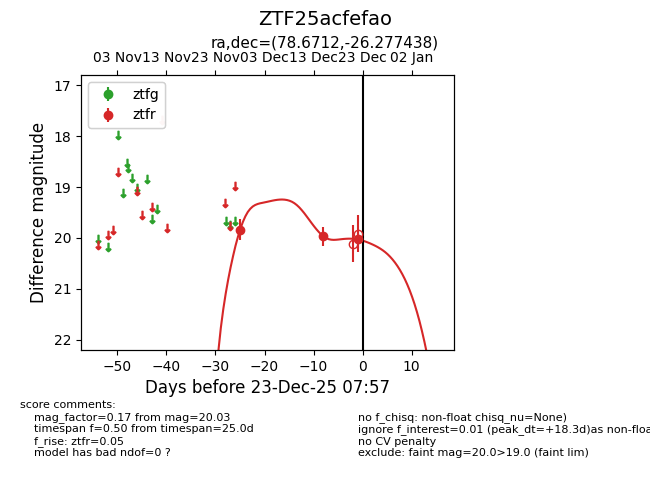
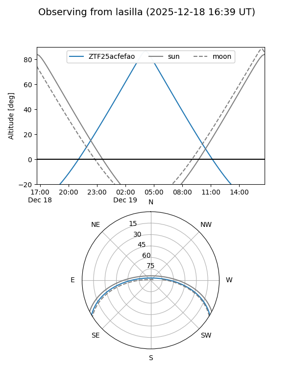
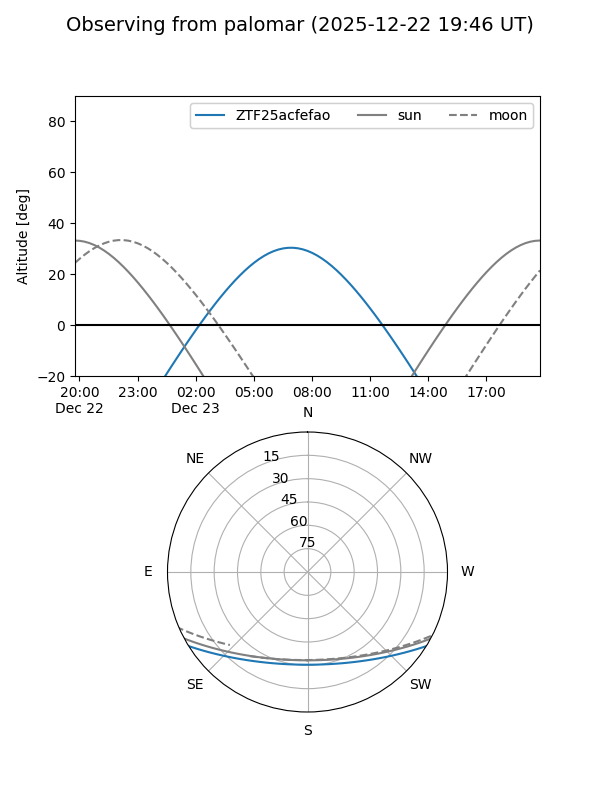

ZTF25acfefao
Target ZTF25acfefao at 2025-12-18 11:18
Aliases and brokers:
FINK: fink-portal.org/ZTF25acfefao
Lasair: lasair-ztf.lsst.ac.uk/objects/ZTF25acfefao
ALeRCE: alerce.online/object/ZTF25acfefao
alt names
ZTF25acfefao (ztf,fink_ztf)
Coordinates:
equatorial (ra, dec) = 78.6712,-26.27744
equatorial (HMS+DMS) = 05:14:41.08,-26:16:38.78
galactic (l, b) = (228.4094,-31.92774)
Photometry
last ztfr=19.97
2 ztfr detections
Lightcurve

Visibility


Additional plots